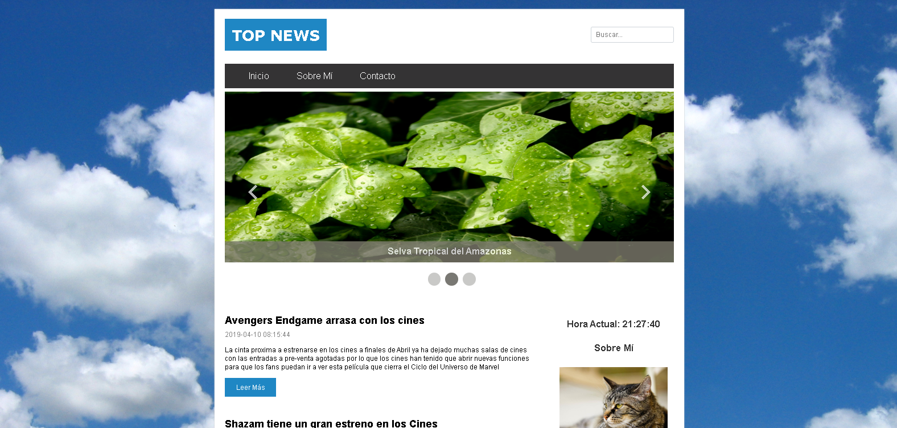
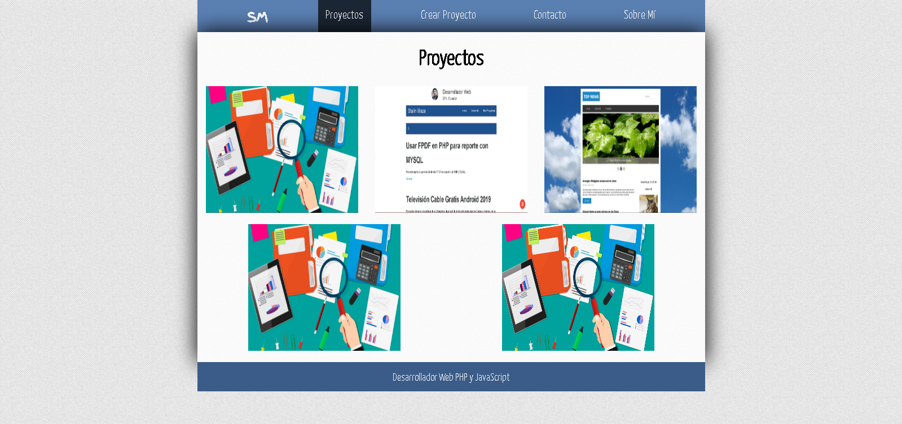

Sobre Mí
Hola mi nombre es Stalin Maza, soy desarrollador web con experiencia en lenguajes de backend y frontend y estudio actualmente en la Universidad Politécnica Nacional del Ecuador donde he desarrollado varios proyectos de aplicaciones y sitios web responsive de alta calidad.
Ser autodidacta como forma para complementar el estudio universirario me ayudó mucho a fortalecer y emprender de manera correcta el duro pero hermoso camino del desarrollo de software, una de mis grandes pasiones, la cual busco seguir mejorando cada día por medio del aprendizaje continuo y estar siempre al tanto de las tecnologías y sus novedades.
Quito, Ecuador
Puedes ver mi currículum: aquí
Experiencia
Desarrollador Web Junior
El Proyecto fue desarrollado usando Drupal como Gestor de Contenido
Educación
Escuela Politecnica Nacional
ESFOT
Centro de Educación Continua
Ingles Intermedio - Español Nativo
Instituto Tecnológico Superior Central Técnico
Industriales
Habilidades


- Desarrollo de Sitios Web Adaptables a cualquier tipo de Pantalla
- Sitios Web con Wordpress (Temas Personalizados)
- Manejo Backend con PHP, Laravel y Symfony
- Desarrollo de Aplicaciones Móviles con IONIC + Angular
- Manejo de Bases de Datos con SQL Server, MongoDB, MySQL y PostgreSQL
- Manejo de Redes Sociales y Asesoría en Comercio Electrónico
- Soporte Técnico de Computadoras a nivel de Software
- Desarrollo Ágil usando la Metodología Scrum
Intereses
Me gusta aprender nuevas cosas y actualmente estoy cursando cursos para profundizar el desarrollo Backend con PHP y FrontEnd con JavaScript además del desarrollo móvil con IONIC.
Las plataformas que he usado para aprender son:
Proyectos
-

Blog en Jekyll y Hosting en Github Pages
Jekyll es un generador de sitios estáticos desarrollado por Tom Preston-Werner usando Ruby como lenguaje de Programación
-

Blog Básico con PHP
Fue desarrollado con PHP usando la programación estructurada como paradigma
-

Ejercicios Codepen
Decenas de ejercicios desarrollados usando HTML, CSS y JS sobre diversos componentes o utilidades para proyectos FrontEnd
-

Gestor de Tareas con Symfony 4.2
Gestor Básico de Tareas desarrollado usando el Framework PHP Symfony en su versión 4.2
-

GymGalaxy
Sitio para administración básica de un Gimnasio desarrollado con PHP y Ajax
-

Laragram Laravel 5.7
Sitio Web tipo Instagram para subida de imagenes, poder comentar, dar like, ver tus imagenes favoritas y administrar tu perfil de forma básica usando Laravel como Framework PHP
-

Tienda Virtual de Ropa - TiendaSM
Proyecto Básico de una tienda virtual desarrollado con PHP POO que permite la administración de los productos, las categorias, un carrito de compras y mucho ,más
-

Sitio Básico FrontEnd - TopNews
Proyecto Básico de un Sitio Web Básico desarrollado con HTML, CSS, JS con JQuery que obtiene los posts dinamicamente a partir de un archivo JSON
-

Sitio Web para subir proyectos de un Portafolio
Sitio Web Básico para que se pueda subir los proyectos realizados con una imagen, una descripción y una dirección web, hecho con NodeJS en el Servidor y Angular en el Cliente
Certificados & Reconocimientos
- Curso Master en PHP por Victor Robles
- Curso Master en Javascript por Victor Robles
- Curso Ionic 4 por Fernando Herrera
- Curso para convertir un template HTML a una WebApp por Fernando Herrera
- Curso HTML, CSS y JS por Álvaro Felipe
- Curso de Programaciñon Básica por Freddy Vega